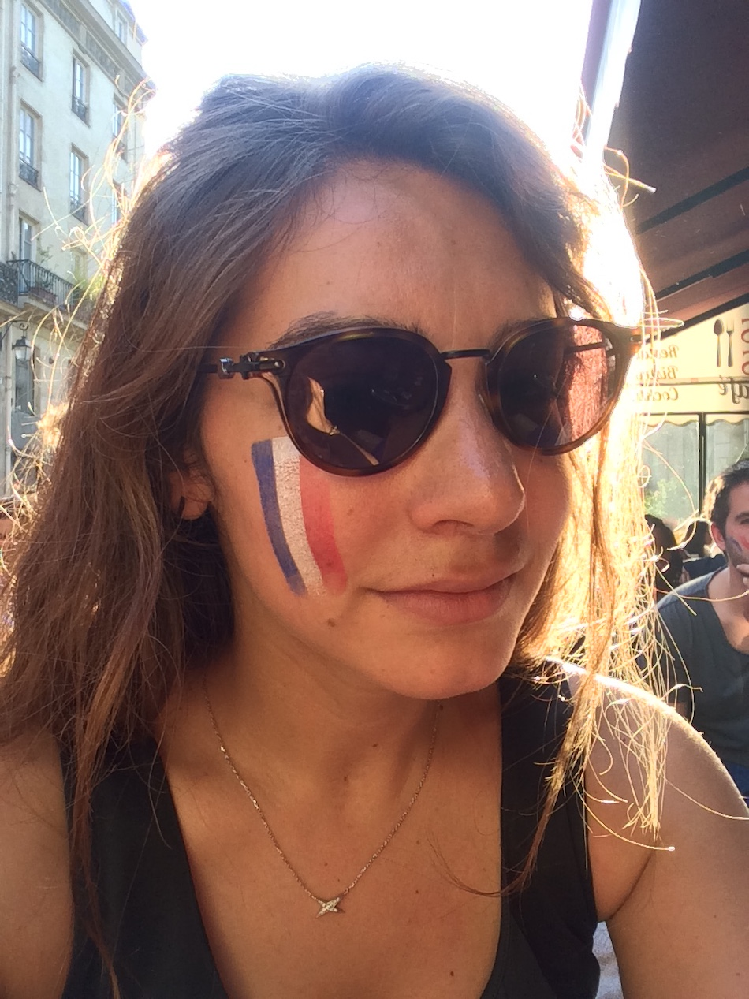

HELLO, I'M CHARLOTTE
Don't judge this page
I love eating cheese 🧀 and drinking wine 🍷, doing some sports 🏋🏻♀️ and GIFs 👾.
Checkout my videoWHY I LOVE WINE

Studies have shown that compared to low intake, light to moderate consumption of wine is associated with better cognitive performance. Studies have also shown that as part of a healthy diet, and when consumed with meals, small amounts of red wine may be associated with reduced symptoms of depression.
WHY I LOVE SPORTS

- Better Sleep Exercising is a natural way to loosen up and let go of stress. You can also make new friends who can be there for you as a support system. When you feel under pressure or stressed, call up a teammate, head to the gym to talk and play it out
- A Strong Heart Your heart is a muscle and needs frequent exercise to help it keep fit and healthy. A healthy heart can pump blood efficiently around your body. Your heart will improve in performance when it is regularly challenged with exercise. Stronger hearts can improve overall health of the body.
WHY I LOVE GIFs

I mean... this is obvisous !